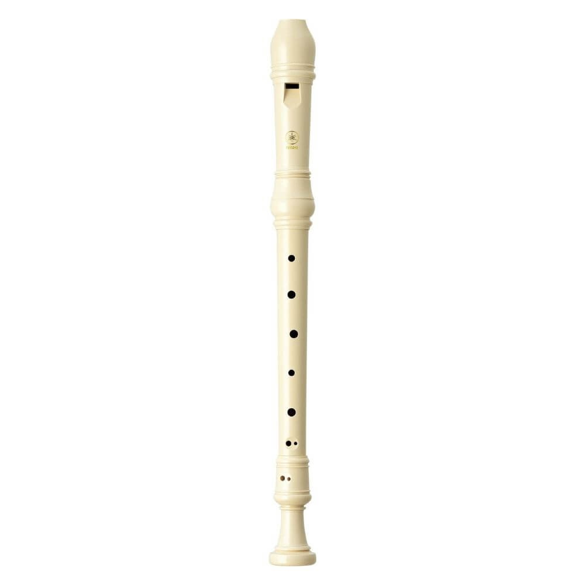
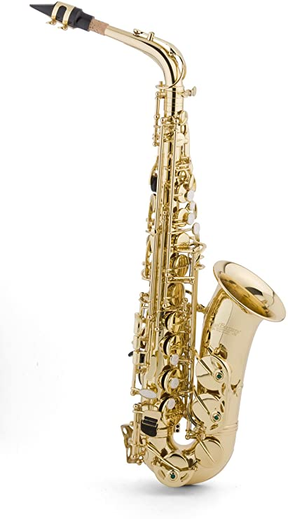
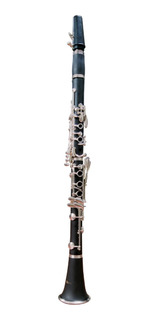
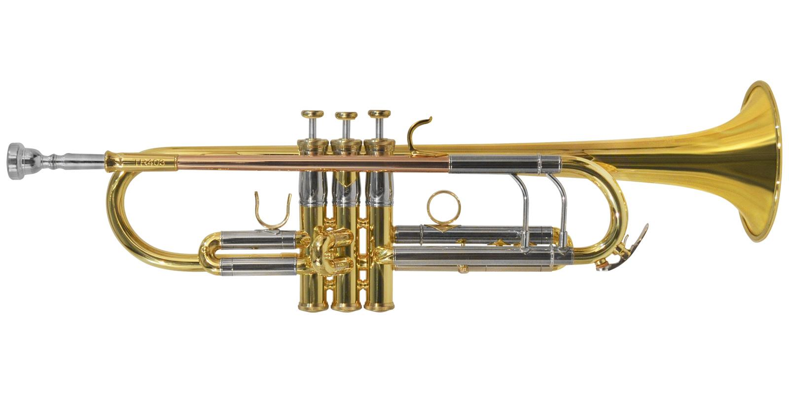

- INSTRUMENTOS DE VIENTO -
Un instrumento de viento es un instrumento musical que utiliza aire para producir sonido. El sonido es creado por una corriente de aire que fluye a través del cuerpo del instrumento o alrededor de él. En la mayoría de los casos, la venta al aire de la boca del músico.
Estos instrumentos también se denominan aerófonos.
INSTRUMENTOS EN VENTA:
FLAUTA

Se denomina flauta a un tipo de instrumento musical de viento. Por la sencillez de su construcción, puede que sea uno de los instrumentos más antiguos, pues con diversas formas se encuentra en todas las culturas. ...
En algunas culturas también existen flautas que se tocan a través de la nariz.
Is Discontinued By Manufacturer : No
Dimensiones del producto : 32.72 x 2.54 x 2.54 cm; 90.72 g
Producto en Amazon.com.mx desde : 3 diciembre 2013
Fabricante : Yamaha
ASIN : B000IJHW0O
Número de modelo del producto : YRS-20BP
Clasificación en los más vendidos de Amazon: nº1,462 en Instrumentos Musicales (Ver el Top 100 en Instrumentos Musicales)
nº11 en Instrumentos de viento madera
PRECIO: $180.00
SAXOFÓN

El saxofón, también conocido como saxófono o simplemente saxo, es un instrumento musical cónico, de la familia de los instrumentos de viento-madera,
generalmente hecho de latón que consta de una boquilla con una caña simple al igual que el clarinete.
Is Discontinued By Manufacturer : No
Dimensiones del producto : 17.78 x 66.04 x 30.48 cm; 5.44 kg
Producto en Amazon.com.mx desde : 22 septiembre 2014
Fabricante : Jean Paul USA
ASIN : B006WAVQKA
Número de modelo del producto : AS-400
Clasificación en los más vendidos de Amazon: nº1,671 en Instrumentos Musicales (Ver el Top 100 en Instrumentos Musicales)
nº14 en Instrumentos de viento madera
PRECIO: $12,149.00
CLARINETE

El clarinete es un instrumento musical de la familia de los instrumentos de viento-madera que consta de una boquilla con caña simple.
Dentro de la orquesta, se encuentra en la sección del viento-madera, junto a la flauta, el oboe y el fagot.
Is Discontinued By Manufacturer : No
Dimensiones del paquete : 37.5 x 26.3 x 12 cm; 2.18 kg
Producto en Amazon.com.mx desde : 2 julio 2018
Fabricante : Yinfente
ASIN : B07F289G49
Número de modelo del producto : 4354414665
Clasificación en los más vendidos de Amazon: nº41,580 en Instrumentos Musicales (Ver el Top 100 en Instrumentos Musicales)
nº632 en Instrumentos de viento madera
PRECIO: $5,560.00
TROMPETA

La trompeta es un instrumento musical de viento, que pertenece a la familia de los instrumentos de viento metal o metales, fabricado en aleación de metal.
El sonido se produce gracias a la vibración de los labios del intérprete en la parte denominada boquilla a partir de la columna del aire (flujo del aire).
Comúnmente, suele estar afinada en si ♭ (bemol), es decir, un tono por debajo de la afinación escrita en el pentagrama, aunque también hay trompetas afinadas en fa, en do, en la y en mi, - bemol -.
Dimensiones del producto : 20.07 x 12.45 x 0.51 cm; 10 g
Producto en Amazon.com.mx desde : 31 julio 2014
Fabricante : Pro Tec
ASIN : B0002E583I
Número de modelo del producto : L226
Clasificación en los más vendidos de Amazon: nº3,110 en Instrumentos Musicales (Ver el Top 100 en Instrumentos Musicales)
nº49 en Accesorios para Instrumentos de Viento
PRECIO: $10,960.00